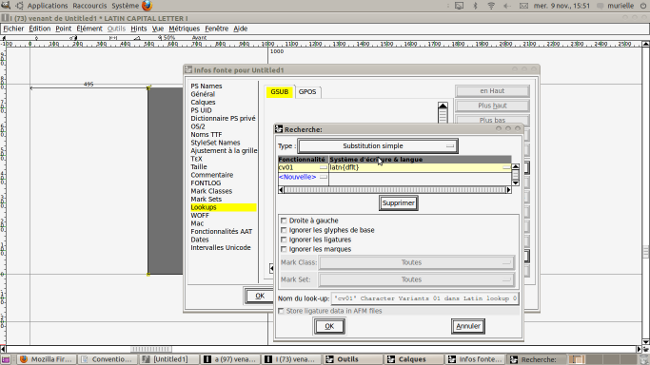
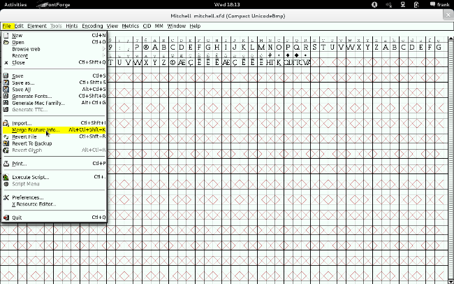

Prise en main de FontForge
FontForge est un logiciel d’édition vectorielle de fontes, prenant en charge plusieurs formats standards. Il a été créé par Georges Williams en 2000 et est fréquemment amélioré ou réparé par un groupe de plus en plus large de développeurs et d'utilisateurs.
Plongeons dans FontForge. Son interface est très particulière et apparaît plutôt comme repoussante, comme pour pas mal de graphistes que des années de pratique d'interfaces standardisées à l'extrême ont rendus rétifs à la différence et au contraste quand il s'agit d'outils. Georges Williams s'en explique, entre autres dans une interview1 où il dit ce qu'on pourrait traduire par :
Je pense que les idées qui sont derrière sont belles, et dans un sens je trouve belle l'interface utilisateur. Je ne suis pas sûr que personne d'autre au monde ne pense de la même manière, parce que c'est quelque chose que je veux pour moi en particulier, mais je pense que c'est beau...
Cette manière d'être auteur d'un outil illustre bien la position particulière, très personnelle et en même temps généreuse, de quelqu'un qui développe un outil technique tout en sachant très bien qu'il s'agit d'un objet culturel, et que c'est même son enjeu principal.
Accueil
Lorsque vous lancez FontForge, une fenêtre d’accueil s’ouvre d’abord, suivi du dialogue [Ouvrir] qui vous permet de naviguer dans vos dossiers, d’y ouvrir un fichier ou d’ouvrir un fichier récemment ouvert dans une session précédente.

Cette fenêtre d’accueil se ferme automatiquement – il est aussi possible de la désactiver dans les Préférences (menu [Préférences], section [Généralités], [Écran d’accueil]).

Le dialogue Ouvrir débute par défaut dans votre dossier personnel.
Si vous lancez FontForge à partir de la ligne de commande, le dialogue débute dans le dossier courant de la ligne de commande.
Ce dialogue, bien que spécifique à FontForge, est construit comme la plupart des dialogues de sélection de fichiers. Il vous permet aussi de créer une nouvelle fonte avec le bouton [Nouvelle fonte].
Dans la partie supérieure, des boutons vous permettent de naviguer dans les dossiers (avec les boutons [Dossier personnel], [Dossier parent]), de modifier les préférences propres à cette fenêtre de dialogue.

Le bouton [Dossier personnel] renvoie à votre dossier personnel lorsque que vous êtes dans un autre dossier courant.


Le bouton [Menu de dossier] permet de retourner dans le dossier précédent, dans le dossier suivant ou d’ajouter le dossier courant à votre liste de favoris ou encore de le retirer de cette liste, s’il en fait partie. Par défaut trois dossiers sont déjà dans votre liste de favoris, mais il est possible qu’ils n’existent pas ou ne soient pas accessibles, selon votre configuration.

Le bouton [Dossier courant] affiche le nom du dossier courant. Lorsque vous cliquez dessus, il vous affiche la liste des dossiers parents.

Le bouton [Dossier parent] remplace le dossier courant pour son dossier parent. Par exemple, si vous êtes dans le dossier /home/utilisateur/Bureau, cliquer sur ce bouton vous placera dans le dossier /home/utilisateur.


Le bouton [Préférences] vous permet de changer les paramètres d’affichage du dialogue. Vous pouvez choisir de montrer les fichiers cachés, de choisir si les dossiers sont en premier dans la liste ou dans le même ordre alphabétique que les fichiers, ou encore si les dossiers sont dans une liste à gauche et les fichiers dans une liste à droite.

Par défaut, il y a une liste unique où les dossiers et les fichiers sont triés selon l'ordre alphabétique. Le dossier parent est accessible en double-cliquant sur l’icône ou l'étiquette. Si vous double-cliquez sur l’icône ou le nom d’un dossier, vous y accédez. De même, si vous double-cliquez sur un fichier, celui-ci est sélectionné, son nom s’affiche dans le champ du nom de fichier.

Vous pouvez sélectionner plusieurs fichiers, en cliquant sur leur nom et en maintenant la touche Maj enfoncée. Leurs noms s’afficheront dans le champ de nom de fichier, séparés par un point-virgule.

Vous pouvez aussi utiliser le champ de nom de fichier. Il se complète automatiquement dès que vous renseignez les premières lettres du nom. Si plusieurs noms de fichiers commencent de la même façon, une liste s’affiche jusqu’à ce que le nom corresponde à un seul fichier. Vous pouvez aussi utiliser ce champ pour changer le dossier courant.
Un filtre vous permet d’afficher uniquement certains formats de fichiers. Par défaut, FontForge affiche tous les fichiers de fontes qu’il peut ouvrir.

Le bouton de [Nommage] vous permet de modifier les noms de glyphes lorsque vous ouvrez un fichier. Nous vous le déconseillons.
Fenêtre de font
C'est la fenêtre principale. Elle se présente sous la forme d’une table de glyphes, organisés selon le codage de leur emplacement. Le codage définit le nombre d’emplacements et la place des glyphes dans ces emplacements. Ils peuvent varier sensiblement d'un codage à l'autre. C'est pourquoi nous recommandons le codage Unicode et décrivons comment vérifier qu’il est bien utilisé et comment le sélectionner dans la description des menus.
Les informations permettant d’identifier les cases de glyphes sont affichées.

Sous la barre de menu de la fenêtre de fonte se situe la barre d’infos de sélection. Elle affiche la valeur d’index, son équivalent hexadécimal, le code du caractère Unicode correspondant, le nom de glyphe et le nom du caractère Unicode correspondant. On peut également accéder à ces informations via une infobulle qui s’affiche si vous laissez le curseur une seconde sur une case, comme illustré ci-dessus.
Ainsi dans l'exemple proposé, l'infobulle affiche :
- 101 - la valeur d’index de la case dans les glyphes de la fonte ;
- 0x0065 - cette même valeur en hexadécimal ;
- U+0065 - le code du caractère Unicode correspondant (celui qui sera utilisé par d’autres applications avec la fonte finale générée) ;
- e - le nom du glyphe ;
- LATIN SMALL LETTER E - le nom du caractère Unicode correspondant.
Les informations de l’infobulle sont identiques à celles de la barre d'infos. Parfois certaines informations spécifiées dans le standard Unicode sont aussi indiquées. Ici, ces informations renvoient aux caractères Unicode U+212E et U+212F.
Vous pouvez sélectionner plusieurs glyphes en maintenant la touche [Majuscule] enfoncée lorsque vous cliquez ou cliquez-glissez sur les glyphes à sélectionner.
Les étiquettes au-dessus de chaque case peuvent être modifiées pour correspondre à ces données (menu Vue -> Titrer les Glyphes avec / View > Label Glyph by).
|
|
Par dessin du caractère Unicode (avec la fonte qui le possède sur votre ordinateur). |
|
|
Par nom du glyphe. |
 |
Par valeur hexadécimale du code Unicode (ici U+0040, et U+0041). |
| |
Par valeur hexadécimale de l’index des glyphes de la fonte, qui dépend le plus souvent du codage que vous utilisez, ici Unicode. |


Cette même étiquette peut indiquer si des modifications apportées n'ont pas encore été sauvegardées dans le fichier. Des informations supplémentaires concernant les hints* et les calques sont fournies. La couleur de ces indications est le bleu pour les courbes cubiques* et le rouge pour les courbes quadratiques* (la différence entre ces deux types de courbes est expliquée dans « Prise en main de FontForge »).
 |
Le glyphe modifié n’est pas sauvegardé. Ici, pour le
glyphe du A, le fond de l’étiquette de case change de couleur. Il est
coloré et les bords gauche et droit sont de couleur plus claire. |
 |
Si les contours ont été enregistrés dans le fichier, mais que les hints manquent, les bords gauche et droit de l’étiquette sont colorés. Vous pouvez ajouter les hints automatiquement (menu Hints > Génération automatique de hints), les ajouter manuellement ou laisser FontForge les ajouter au moment de l'export du fichier de fonte. |
 |
Si les contours n’ont pas été enregistrés dans le fichier, mais que les hints ont été ajoutés. |
 |
Quand vous avez un calque arrière, le fond de l’étiquette est gris foncé. |
Ces indications sont surtout utiles pour se rappeler de sauvegarder les fichiers de travail fréquemment.
Menus
Menu Fichier
Le fonctionnement de ce menu est standard, il permet d’accéder aux dialogues Ouvrir, Sauvegarder ou Fermer le fichier de fonte en cours. Ce menu permet aussi de générer le fichier de fonte utilisable par les autres applications.
Menu Fichier > Préférences
Les préférences sont accessibles par le menu Fichier. Elles permettent notamment de configurer des outils scripts ou greffons supplémentaires, et de changer l’apparence générale de FontForge.
Les nouvelles fontes créées par FontForge sont automatiquement en codage ISO 8859-1 (latin-1), mais nous recommandons tout au long de ce livre d’utiliser le codage ISO 10646-1 (Unicode, BMP). Vous pouvez modifier ce paramètre de codage par défaut dans les Préférences (menu Préférences > section Nouvelle fonte > Codage nouvelle fonte). Il est aussi possible de modifier ce codage une fois la fonte créée, à l’aide du menu Codage, décrit plus bas.
Quand vous modifiez une fonte pour ajouter les lettres accentuées, dans la section Accents du menu Préférences, le paramètre [PreferSpacingAccents] est à désactiver. Ce paramètre permet de composer ces lettres accentuées à partir de bons glyphes et caractères Unicode, que nous vous recommandons d’ajouter dans les bonnes pratiques.
Menu Fichier > Générer fonte(s)
Ce dialogue vous permet de générer un fichier de fonte utilisable dans d’autres applications. Nous recommandons de générer des fontes souvent pour les tester avant la version finale. Vous pourrez donc générer ce fichier, l’installer et tester la fonte dans une application rechargée. Voir le chapitre « Comment créer une fonte ».
Menu Édition
Ce menu permet d’appliquer les opérations traditionnelles d’édition ainsi que beaucoup d’opérations spécifiques à FontFo ge :
- annuler, rétablir la dernière modification apportée à la sélection ;
- copier, couper, ou coller les contours (du et vers le calque Avant) ;
- copier et coller une référence à un glyphe dans un autre ;
- copier et coller des données métriques (chasse, approche, etc.) ;
- supprimer les contours des glyphes sélectionnés ;
- copier des contours entre les calques ;
- d’autres opérations propres aux références ;
- modifier les données copiées par défaut via l’opération copier/coller, par exemple les métadonnées en plus des contours.
Menu Élément
Ce menu permet d’accéder à plusieurs dialogues dont :
- les dialogues Infos fonte et Glyph infos (lorsqu’un seul glyphe est sélectionné), décrits plus loin dans Dialogues communs ;
- des dialogues de validations, décrits ci-dessous ;
- plusieurs dialogues de transformations, décrits dans Menu de la fenêtre de glyphes.
Le sous-menu Autres Infos > Montrer les dépendances vous permet de voir la liste des glyphes se référant au glyphe sélectionné.
Vous pourrez aussi accéder au sous-menu Validation > Chercher problèmes.

Cette boîte de dialogue vous permet de chercher et de trouver des problèmes ne respectant pas les spécifications des différents formats de fichiers de fonte. Par exemple, il vous indique les contours qui sont dans le mauvais sens, les points superposés, les points aux coordonnées non arrondies, les courbes sans point aux extrémités horizontales ou verticales.
Ainsi nous vous recommandons de vous assurer que les coordonnées des points de contours soient arrondies au nombre entier le plus proche [Non-Integral coordinates], ou d’éviter d’avoir deux points trop proches (comme les points superposés par exemple).

Nous vous recommandons aussi de vous assurer qu’il n’y a pas de chemins sécants (contours qui se chevauchent). Dans la fenêtre de glyphe ou dans celle de la fonte, vous pouvez supprimer les contours sécants à l’aide du menu Élément > Recouvrements > Effacer recouvrements.
Les dialogues concernant les bitmaps ne sont pas détaillés dans le présent ouvrage.
Les dialogues du sous-menu Styles concernent des opérations de transformations automatiques de FontForge pour la création de variantes de fonte.
Le sous-menu Transformations contient le dialogue important Transformer. Il vous servira fréquemment pour appliquer des transformations géométriques précises aux glyphes que vous souhaitez modifier. Ce dialogue est décrit dans la section Dialogues communs.
Le sous-menu Corriger direction fonctionne comme celui du menu Élément de la fenêtre de glyphe.
Le sous-menu Assembler vous permettra de laisser FontForge créer automatiquement les glyphes sélectionnés avec plusieurs opérations.
- Créer glyphe accentué créera les glyphes à partir de ses parties, si celles-ci sont présentes dans d'autres glyphes. Par exemple, Pour le Ô (U+00D4), FontForge utilisera les contours du O et les contours du circonflexe présent avec une référence (décrit dans le chapitre « Comment ajouter des glyphes a une fonte ») . Si vous avez le circonflexe avec chasse (U+005E) et le circonflexe sans chasse (U+0302), FontForge utilisera le circonflexe avec chasse par défaut, cependant nous recommandons d'utiliser les ancres OpenType et de désactiver ce paramètre par défaut dans le menu Fichiers > Préférences > Accents > PreferSpacingAccent afin que le circonflex sans chasse soit utilisé. Avec les ancres le caractère précomposé Ô (U+00D4) sera donc identique à son équivalent, la chaine composée à la volée, Ô (U+004F, U+0302).
- Construire un glyphe composite fait la même chose mais avec les contours sans références, il copie donc les contours point par point.
Menu Outils
Ce menu, désactivé par défaut, est prévu pour accueillir des outils personnalisables.
Si vous ajoutez des scripts ou greffons à FontForge, vous pouvez y accéder depuis ce menu. Vous pouvez faire ces scripts en python par exemple et les déposer dans le dossier utilisateur dans un sous-dossier python (par exemple /home/utilisateur/.FontForge/monscript.py).
Menu Hints
Ce menu permet de modifier les hints ou instructions d’optimisation à l’écran des fontes. Il permet d’ajouter, de retirer ou de modifier les hints utilisés dans les formats .otf, ou .ttf. FontForge ajoute automatiquement les hints lorsque vous travaillez avec des courbes cubiques*, ce qui peut être désactivé dans les Préférences (menu Préférences > section Créer > Hints automatiques).
Menu Codage
L’agencement des glyphes peut être modifié en fonction des différents codages proposés ou d'un codage personnalisé, mais nous recommandons d’utiliser le codage 10646-1 Unicode BMP, offrant actuellement la meilleure couverture des langues du monde.
Menu Vue
Ce menu permet de modifier les préférences d’affichage de la fenêtre de fonte, comme la taille des cases de la grille, l’affichage des glyphes dans les cases. Il permet également d'atteindre une case spécifique, de changer les étiquettes utilisées pour les cases (Dessin du glyphe s’il est présent dans une fonte installée sur votre ordinateur, nom du glyphe, valeur Unicode, valeur dans l’index des glyphes de la fonte).
Menu Métriques
Ce menu permet de modifier les métriques* des glyphes sélectionnés.
Menus CID et MM
Nous n’abordons pas ces fonctionnalités dans ce livre.
Fenêtre de glyphe
La fenêtre de glyphe permet de modifier le contour d’un glyphe. Elle s’ouvre lorsque vous double-cliquez sur un glyphe dans la fenêtre de fonte, et elle est initialement spécifique à un emplacement de glyphe dans la fenêtre de fonte. Vous pouvez en ouvrir plusieurs. Une même fenêtre de glyphe peut aussi avoir plusieurs onglets spécifiques à plusieurs glyphes. Cela permet de travailler avec plusieurs fenêtres, ou une seule.

Cette fenêtre a un menu similaire à celui de la fenêtre de fonte, avec quelques différences. Vous pouvez donc accéder aux mêmes menus principaux que la fenêtre de fonte, mais les sous-menus sont légèrement différents. Certaines opérations sont disponibles dans les deux, et d'autres, par exemple Remplacer par références, est uniquement disponible dans la fenêtre de fonte.
Composants de la fenêtre de glyphe
- Menu (Fichier, Édition, etc.) ;
- Onglets des glyphes ouverts ;
- Informations du curseur (position, déplacement, etc.) ;
- Règle horizontale en haut, et verticale à gauche (avec position du curseur) ;
- Canevas contenant le contour :
-
- point et lignes des contours les joignant,
- ligne de base,
- approche gauche (depuis x=0) et approche droite (jusqu’à la chasse).

Dans la capture d’écran précédente, les onglets des glyphes des lettres « a minuscule » et « o minuscule » sont ouverts. Pour ouvrir plusieurs onglets, vous pouvez taper la touche du caractère à ouvrir, avec le clavier, par exemple : dans le fenêtre de glyphe du « o », si vous tapez la touche a, l'onglet du caractère « a » s’ouvre. Vous pouvez aussi utiliser le dialogue Aller au glyphe (décrit plus bas) disponible dans le menu Vue.
La zone principale de la fenêtre est le canevas de dessin. Cette zone affiche le calque sélectionné et les contours qu’il contient sont modifiables. Les autres calques peuvent être visibles mais leurs contours ne le sont pas. Les contours du calque Guide sont aimantés et communs à tous les glyphes, donc indépendamment de la fenêtre de glyphe.
Fenêtre d’outils et fenêtre de calques
Ces deux fenêtres sont uniquement affichées lorsqu’une fenêtre de glyphe est ouverte et mise à l’avant (focus). La fenêtre de calques vous permet de sélectionner le calque de travail ou de cacher ou de rendre visible certains calques ; voir « Comment créer une fonte ».
| Mode normal |
Mode Spiro |
 |
 |
Calques
|


L’outil Pointer sert à sélectionner ou déplacer des points sélectionnés.
Pour sélectionner un point, il faut cliquer dessus. Celui-ci change de couleur pour devenir jaune. Pour sélectionner un ou plusieurs points, il faut cliquer-glisser en parcourant la zone couvrant les points que vous désirez sélectionner. Un rectangle se forme à partir de votre cliquer-glisser comme sa diagonale.

Vous pouvez aussi sélectionner plusieurs points en cliquant sur chacun d’eux avec la touche Majuscule enfoncée.
Pour déplacer le ou les points sélectionnés, cliquer-glisser un des points sélectionnés à l’endroit désiré.

Vous pouvez aussi retirer des points de la sélection. Vous pouvez cliquer sur chacun de ses points en maintenant la touche Majuscule enfoncée, ou cliquer-glisser comme décrit précédemment un rectangle entourant les points à désélectionner.
|
|
Deux points sont ici superposés - ce qui est difficile à voir à l’œil nu, car ils semblent ne faire qu'un. |
 |
Quand vous cliquez sur le point apparent, seul le point du dessus est sélectionné. Le point sélectionné jaune est rempli par le point moins élevé (en rouge). |
 |
Quand vous cliquez-glissez pour sélectionner les deux points, ils apparaîssent comme un seul point jaune. |
 |
Si les deux points sont sélectionnés et que vous déselectionnez le point du dessus (avec clic + Majuscule), seul le point du dessous est sélectionné. |

Lorsque deux points sont superposés ou quasi-superposés (ils ont des coordonnées identiques ou très proches), il est parfois difficile de sélectionner un seul de ces points. Si vous cliquez sur les points superposés, celui qui a été ajouté au contour en dernier, c’est-à-dire celui qui a le numéro de point (number point) le moins élevé est sélectionné et l’autre ne l'est pas. Mais si vous souhaitez sélectionner l’autre point, vous pouvez le faire en sélectionnant les points avec un cliquer-glisser sur les deux points, et désélectionner le point avec le numéro de point le moins élevé.

L’outil Agrandir permet d’agrandir ou de zoomer (sur) une zone spécifique sur laquelle vous cliquez. Pour faire l’opération inverse avec le même outil, cliquez tout en enfonçant la touche Alt.

L’outil Dessiner à la main levée permet de dessiner un contour et ses points automatiquement en cliquant-glissant. Il est difficile à maîtriser.

L’outil Faire défiler la main permet de cliquer-glisser la zone affichée dans la fenêtre de glyphe. Il est utile lorsque vous avez agrandi ou zoomé (sur) une zone spécifique.


 (Mode normal)
(Mode normal)
Les outils Ajouter un point curviligne, Ajouter un point de contrôle quasiment horiz./vert., Ajouter un coin, Ajouter un point tangent permettent d’ajouter des points au glyphe. Pour ajouter le premier point d’une nouvelle courbe, il suffit de cliquer. Pour ajouter un point à une courbe existante, sélectionnez le point d’attache et cliquez : une courbe ou une ligne sera créée entre le point d’attache et le nouveau point.
 (Mode normal)
(Mode normal)
L’outil Ajouter un point puis glisser permet d’ajouter un point curviligne en cliquant et de modifier ses points de contrôle en glissant. Il permet de dessiner rapidement des contours en forme de courbes.
Contour formé des différents types de points

- point angulaire dans le coin en haut à droite ;
- point de tangente au milieu à droite terminant une ligne rectiligne ;
- point curviligne dans la courbe en bas à droite ;
- point curviligne horiz./vert. en bas ;
- point curviligne dans la courbe en bas à gauche ;
- point curviligne horiz./vert. au milieu à gauche ;
- point curviligne dans la courbe en haut à gauce ;
- point de tangente en haut débutant une ligne rectiligne.


 (Mode Spiro)
(Mode Spiro)
Les outils d’ajout de point en mode Spiro* permettent des dessiner des courbes interdépendantes dont la tension correspond à un tracé calligraphique. Elles peuvent donner à votre dessin une apparence plus naturelle. Le meilleur moyen de comprendre comment elles fonctionnent est de dessiner avec. Nous recommandons de les utiliser dans les couches de brouillon, lorsque vous vectorisez vos dessins numérisés.
Contour formé des différents types de points Spiro
- point angulaire en haut à droite ;
- point next constraint au milieu à droite terminant une ligne rectiligne ;
- point curviligne G2 en bas à droite ;
- point curviligne en bas ;
- point curviligne G2 en bas à gauche ;
- point curviligne au milieu à gauche ;
- point curviligne G2 en haut à droite ;
- point prev constraint en haut débutant une ligne rectiligne.

Le bouton Spiro permet de passer en mode de courbes Spiro. Il modifie les boutons des outils d’ajout de points précédents et les points des contours (cependant ceux-ci restent les mêmes si rien n’est modifié avant de désactiver le mode Spiro).

L’outil Scinder permet de scinder les courbes entre deux points, en créant deux points séparés aux intersections de la ligne dessinée avec le cliquer-glisser et les courbes.
 |
 |
 |
| Cliquer-glisser avec Scinder |
Des nouveaux points séparant les courbes sont créés |
Ces points peuvent être déplacés (ou supprimés) |

L’outil Mesurer permet d’obtenir des informations sur les distances tracées avec un cliquer-glisser, par exemple entre deux points.
Il permet de redimensionner les contours composés des points sélectionnés. Si aucun point n’est sélectionné, tous les points et contours du glyphe sont redimensionnés.


Les outils de transformations Mettre sélection à l’échelle, Symétrie, Pivoter, Pencher, Projection 3D et Perspective permettent de modifier la sélection, ou tous les contours du glyphe, si rien n'est sélectionné.
Avec ces outils, si vous maintenez la touche Majuscule enfoncée, la mise à l’échelle se fait de manière uniforme (horizontalement, verticalement ou les deux), la rotation et l'inclinaison se font par angles ou en escalier. Pour les outils de projection 3D et en perspective, il faut cliquer-glisser respectivement à partir du point de projection et du point de fuite.
Ces outils de transformations sont généralement rapides mais imprécis. Il est donc difficile, ou même impossible, d’appliquer exactement la même transformation sur plusieurs sélections. Bien que les valeurs des transformations soient affichées, la manipulation du curseur rend difficile la répétition.
Pour des transformations exactes et précises, nous recommandons d’utiliser le menu Élément > Transformations > Transformer. Les mêmes opérations sont disponibles avec les paramètres numériques.
 ou
ou 
 ou
ou 
Les outils Rectange ou ellipse, et Polygone ou étoile permettent de dessiner des formes géométriques avec un cliquer-glisser partant du centre de ces formes. Chacun des deux boutons permet d’avoir deux outils. Il faut double-cliquer sur le bouton pour passer d’un outil à l’autre, par exemple avec le bouton Rectangle ou ellipse, si une ellipse est représentée sur le bouton, l’opération créé une ellipse, et un double-clic sur le bouton le change pour afficher un rectangle et son opération crée un rectangle. Double-cliquez sur ces boutons pour ouvrir leurs dialogues de paramètres respectifs.

Panneau des raccourcis
Sous les outils se situent des informations indiquant l'outil sélectionné et les opérations disponibles avec deux boutons de la souris : le bouton gauche (Mse1), le bouton gauche avec la touche Ctrl enfoncée (^Mse1), le bouton du milieu (Mse2), et le bouton du milieu avec la touche Ctrl enfoncée (^Mse2). Ces raccourcis permettent de combiner plus facilement plusieurs opérations sans changer d’outil. Par exemple, lorsque l'un des outils d’ajout de point est sélectionné :
- le clic gauche applique la première opératio ;
- le clic gauche avec la touche Ctrl enfoncée applique l’opération de l’outil Sélectionne ;
- le bouton du milieu applique l’opération de l’outil Agrandrir ;
- et le bouton du milieu avec la touche Ctrl enfoncée applique l’opération de l’outil Mesurer.
Menu de la fenêtre de glyphe
La plupart des menus de la fenêtre de glyphes sont les mêmes que ceux de la fenêtre de fonte. Vous pourrez donc ouvrir, fermer, enregistrer le fichier ; copier, coller les contours, etc. dans ce menu.
Menu Fichier
Dans la fenêtre de glyphe, ce menu vous permet aussi d’exporter le glyphe courant dans un autre fichier.
Menu Édition
Dans la fenêtre de glyphe, ce menu vous permet de faire beaucoup d’opérations differentes de celui de la fenêtre de fonte.
Des opérations vous permettent de convertir le type de point des points sélectionnés, par exemple modifier le point curviligne sélectionné en un autre type de point.

Une opération vous permet de changer le premier point d’un contour. Ce premier point sera considéré comme le point le plus en dessous, il est brun et a une flèche brune indiquant la direction du contour à son côté. Cette flèche indique la direction du contour. Voir la description du menu Élément pour comprendre l’utilité de cette flèche ou de la direction de contour.
Il est possible d’ajouter une ancre* depuis ce menu. Voir la description du dialogue Ajouter une ancre dans « Comment créer une fonte ».

Les opérations Convertir en Ligne (Make Line) et Convertir en Arc (Make Arc) permettent de relier deux points sélectionnés par une ligne ou par une courbe.

L’opération Convertir en Ligne peut aussi convertir une courbe existante en ligne droite.

L’opération Convertir en Courbe peut aussi convertir une ligne existante en courbe.
Astuce : vous pouvez aussi convertir une ligne en courbe en cliquant-glissant son tracé et non ses points.
L’opération Nommer le contour vous permet de nommer le contour ou de modifier son nom. Ce nom sera affiché à côté du contour.
Menu Élément
En plus des dialogues, ce menu permet d’appliquer plusieurs opérations aux éléments formant le glyphe.
Les dialogues Infos fontes et Glyph info sont décrits plus bas dans la section « Dialogues communs ».
L’opération Infos ouvrira le dialogue Infos points si un seul point est sélectionné, et Infos ancre si une seule ancre est sélectionnée. Cette opération est aussi disponible via le menu contextuel (en cliquant-droit sur le point ou l’ancre).

Le dialogue Info points vous permet de modifier précisément les coordonnées d’un point et de ses points de contrôle. Il vous permet aussi de modifier le type du point. Vous pouvez aussi passer au point suivant ou au point précédent dans le glyphe (même s’ils font partie de contours différents). Des données propres aux hints sont accessibles dans des onglets, mais nous ne décrivons pas leur usage car les hints automatiques sont disponibles.

Le dialogue Infos ancre vous permet de spécifier de quelle ancre il s’agit (selon les noms des ancres dans la fonte), de modifier les coordonnées de celle-ci ou de spécifier son comportement (Marque, Glyphe de base, etc.). Vous pouvez aussi passer à d’autres ancres présentes dans le glyphe courant ; pour un exemple d'application, voir « Comment créer une fonte ».
Le menu Montrer les dépendances est le même que celui de la fenêtre de fonte.

Les opérations de modification de direction de contour vous permettent de corriger l'ordre des points d'un contour.
Ces opérations permettent de corriger certains problèmes de remplissage du glyphe. Ce remplissage est fait d'une manière intéressante. La direction d'un contour défini duquel de ces côtés est rempli. Quand le contour est fermé, tout ce qui est tracé à droite de la flèche brune du premier point sera rempli.
- Si un contour va dans le sens horaire, ce qui est à gauche sera vide. Il indique donc l'extérieur.
- Si un contour va dans le sens antihoraire, ce qui est à gauche sera vide. Il indique donc l'intérieur.

Souvent quand plusieurs contours sont dessinés, on en pense pas à tracer le contour extérieur dans le sens horaire, et le contour intérieur dans le sens antihoraire. Si les deux contours ont été tracé dans le même sens, le dessin n'aura pas de vide intérieur.

Pour corriger cela sans redessiner le contour qui est dans le mauvais sens, vous pouvez utiliser les différentes opération de direction de contour.
Clockwise (sens horaire) et Sens contraire à la montre (sens antihoraire) vous permette de spécifier les sens du contour sélectionné.
L'opération Corriger direction laissera FontForge deviner dans quelle direction le contour sélectionné doit être pour un remplissage correct.
L'opération Reverse direction (inverser la direction) inversera la direction du contour sélectionné.
Fenêtre de métriques
Accessible depuis la séquence Fenêtre > Ouvrir fenêtre de métriques, la fenêtre de métriques permet de modifier les propriétés métriques de la fonte par glyphe, mais aussi de modifier certaines fonctionnalités OpenType. De plus c’est un très bon outil pour prévisualiser les glyphes avec des contours remplis. Nous recommandons d’ailleurs d'avoir cette fenêtre ouverte aux côtés de la fenêtre de glyphe, lorsque vous modifiez un glyphe. Cela permet de voir directement et plus facilement le résultat de chaque modification et de choisir si elle est à annuler ou non.
Pour un exemple d'application, voir « Comment créer une fonte ».
Dialogues communs
Infos fonte
La fenêtre Infos fonte permet de configurer toutes les propriétés de la fonte, ainsi que ses fonctionnalités avancées. Les données sont organisées par onglets. Chaque onglet regroupe des informations correspondantes à un même standard. Certains standards ne concernent pas le type de format de fonte que nous conseillons dans ce document. Nous ne décrivons que les sections pertinentes pour la création de fontes destinées au public le plus large possible.
Section PS Names

Cet onglet vous permet de modifier les noms de la fonte utilisés par les différent logiciels et les différents systèmes d'exploitation.
Le Nom de la fonte est en fait le nom de la fonte du format PostScript* que les applications recourant à la norme PostScript utilisent, sans que l’utilisateur en soit forcément conscient. Celui-ci ne doit pas contenir d’espace, par exemple « NomChoisi », « NomChoisiSans » ou « NomChoisiSansCondensed ». Le nom de style y est attaché par un trait d’union, par exemple « NomChoisi-Italic » ou « NomChoisiSans-Italic ». Par défaut, c’est ce nom qui est utilisé par FontForge pour nommer le nom du fichier .sfd source, par exemple « NomChoisi.sfd », « NomChoisi.sfd » ou « NomChoisiCondensed.sfd » et « NomChoisi-Italic », si le style est spécifié dans le nom.
Le Nom de famille est celui de la famille de fonte, qui est affiché dans l’interface graphique du système d'exploitation ou du logiciel. Il s'agit du nom que l’utilisateur voit dans le menu déroulant des fontes installées. Les différents styles d’une même famille de fontes doivent avoir le même nom de famille. Par exemple « Nom Choisi » pour NomChoisi.sfd, NomChoisi-Italic.sfd ou NomChoisi-BoldItalic.sfd.

Le Nom humain est celui que l’utilisateur voit dans certaines applications qui listent les fontes d’une même famille séparément, et celui qui identifie exactement ce style dans la famille de fontes, par exemple : « Nom Choisi » et « Nom Choisi Italic ».

Le champ Graisse correspond à la graisse et non à la variante. Par exemple, si le nom humain de la fonte est « Nom Choisi Italic », celui-ci est « Regular », cet italique ayant une graisse régulière. En revanche, si le nom humain est « Nom Choisi Bold », celui-ci est « Bold ».
Le champ Version contient le numéro de version de la fonte.
Le champ sfnt Revision est un champ similaire à Version et peut être laissé vide, FontForge se chargeant de le compléter automatiquement par la suite avec les autres informations fournies.
Le champ Copyright contient les informations concernant les droits d’auteurs. (d'autres champs permettent d'indiquer plus précisément les noms et URLs des auteurs, fonderies et licenses correspondants, voir la section « Noms TTF »).
Section Général
La section Général permet de spécifier quelques paramètres du fichier de fonte à générer, qui sont également utilisés par les autres logiciels pour afficher correctement la fonte.
Les valeurs Ascendantes et Descendantes doivent correspondre aux niveaux de vos ascendantes* et descendantes*.
La valeur Cadratin (EM) correspond à l’em, c’est-à-dire la taille de corps* de la fonte. Sa valeur doit être supérieure à 1000. Selon le format de fichier généré, certaines valeurs sont préférables. Pour le format OTF que nous recommandons, la valeur 1000 convient parfaitement. Si vous optez pour un format TTF, afin d’optimiser la fonte pour l’écran à l’aide d’instruction de Hinting, des valeurs comme 1024 ou 2048 sont plus appropriées.
Section Calques
La section Calques permet de modifier le type de contour des calques, d’ajouter ou de supprimer des calques. Nous recommandons d’utiliser un calque en courbe cubique pour le dessin, par exemple un calque Brouillon de type Foreground.

Vous pouvez renommer les calques en cliquant sur leurs noms. Vous pouvez en ajouter en cliquant sur <Nouvelle>.
Par défaut, FontForge ne propose que des calques de même type, uniquement cubique ou uniquement quadratique. Vous pouvez cependant activer le mode Mixed pour avoir des calques de types différents dans le même fichier. Cela peut être utile lorsque vous travaillez sur une fonte à générer à la fois en quadratique (fichier .ttf) et en cubique (fichier .otf).
Section OS/2
La section OS/2 permet de spécifier plusieurs paramètres du fichier que vous vous apprêtez à générer, et qui sont utilisés par les autres logiciels pour sélectionner ou afficher correctement la fonte. Certains de ses paramètres ne sont pas pertinents pour la création de fontes destinées à un large public.

Vous pouvez notamment configurer la Graisse OS/2. Celle-ci est généralement remplie automatiquement par FontForge selon le nom de Graisse que vous utilisez dans Infos fonte > PS Names.

Dans l’onglet Métriques, vous pouvez modifier les paramètres de métriques comme les interlignes. Pour spécifier un interlignage supérieur à la taille du corps* de fonte, ajoutez une valeur positive à Offset typo pour Ascendantes. Pour spécifier un interlignage inférieur à la taille du corps de fonte, ajoutez une valeur négative à Offset typo pour Descendantes. Ces valeurs modifient la hauteur des lignes écrites avec la fonte dans les applications.
Section Noms TTF
Les noms TTF sont remplis par défaut par FontForge et correspondent aux valeurs données dans l’onglet PS2 Names (Noms PS2). Les noms TTF peuvent aussi être indiqués dans plusieurs langues. Ces noms, provenant des noms PS2, sont par défaut en anglais, c'est-à-dire dans la locale English (US). Leurs équivalents dans d’autres langues peuvent être ajoutés et sont visibles avec les interfaces dans ces langues.
Voir chapitre « Comment créer une fonte » pour un exemple d'application.
Section Lookup
Cette section vous permet d’ajouter ou de modifier des fonctionnalités avancées OpenType, organisées en deux catégories :
- les fonctionnalités de substitution (substitution contextuelle, substitution propre à une langue spécifique, variante stylistique, etc.) ;
- les fonctionnalités de positionnement (crénage, positionnement d’ancre).
Les lookups sont des correspondances de fonctionnalités OpenType qui sont utilisés lorsque la fonte est affichée dans une application. Elles sont dans deux catégories. Les fonctionnalités de substitution dans l’onglet GSUB, et les fonctionnalités de positionnement dans l’onglet GPOS.

Nous décrivons comment ajouter quelques fonctionnalités de substitution :
- forme sans point d’un caractère (par exemple le i et le i sans point) utilisé dans la composition de lettre accentué à la volée ;
- forme propre à une langue spécifique.
-
Ces fonctionnalités sont structurées en tables
Chaque table contient des fonctionnalités propres à un ensemble de systèmes d’écriture ou de langues définis. Il arrive que des fonctionnalités soient appliquées dans une langue, mais pas dans une autre. Ceci correspond aux habitudes typographiques qui peuvent varier d’une culture à une autre.
Dans chaque table propre à un groupe système d’écriture/langue, les fonctionnalités sont organisées en sous-table.
A noter que l'on peut directement inclure des fonctionnalités OpenType via l'import d'un fichier externe de fonctionnalités OpenType : ex. fichier Mitchell2.fea.2

Dialogue infos glyphe
Ce dialogue vous permet de modifier les données spécifiques au nom du glyphe et à son caractère Unicode correspondant. Plusieurs de ces sections concernent les fonctionnalités OpenType de substitutions.

Le nom du glyphe et sa valeur Unicode vous sont utiles si vous ajoutez de nouvelles cases de glyphes. Vous pouvez leur donner un nom, par exemple, « A.c2sc » pour le glyphe du A en petite majuscule.
Dialogue transformer
Le dialogue Transformer vous permet d’appliquer les mêmes opérations de transformations géométriques que les outils de la fenêtre d’Outils (dans la fenêtre de glyphe) : déplacer, pivoter, mise à l’échelle uniforme ou non, symétrie, inclinaison, projection 3D et perspective. Mais vous pouvez spécifier leurs paramètres de manière précise et reproductible.

Glyph info
L’onglet Lookup (ou Substitutions) vous permet d’ajouter ou de modifier les fonctionnalités OpenType avancées de substitutions (GSUB : formes alternatives ou contextuelles des glyphes, etc.)
L'onglet Positionnement vous permet d’ajouter ou de modifier les fonctionnalités OpenType avancées de positionnement (GPOS : crénage, positionnement de diacritiques, etc.).
Générer fonte(s)
Ce dialogue vous permet de générer un fichier fonte utilisable par les autres applications, fichier que vous devez installer sur votre ordinateur ou tester dans FontMatrix.

Ce dialogue se compose comme le dialogue Ouvrir pour la navigation de dossier, avec quelques options et boutons supplémentaires. Le format de fichier que nous recommandons est OpenType CFF (format OpenType .otf contenant des courbes cubiques).

D’autres formats sont disponibles, notamment le format .ttf (format TrueType/OpenType contenant des courbes quadratiques) optimisé pour l’écran.

En cliquant sur le bouton [Options], vous pouvez modifier les paramètres de génération.
FontForge peut par exemple valider les contours ou métadonnées de la fonte avant de générer le fichier. Ces tests de validation sont aussi disponibles dans le menu Élément > Validation dans la fenêtre de fonte. Voir la section de fenêtre de fonte pour une description de ce dialogue.
- 'I think the ideas behind it are beautiful in my mind — and in some sense I find the user interface beautiful. I’m not sure that anyone else in the world does, because it’s what I want, but I think it’s beautiful.' - Interview de George Williams par OSP http://ospublish.constantvzw.org/typo/i-think-the-ideas-behind-it-are-beautiful-in-my-mind^
- static/Mitchell2.fea^